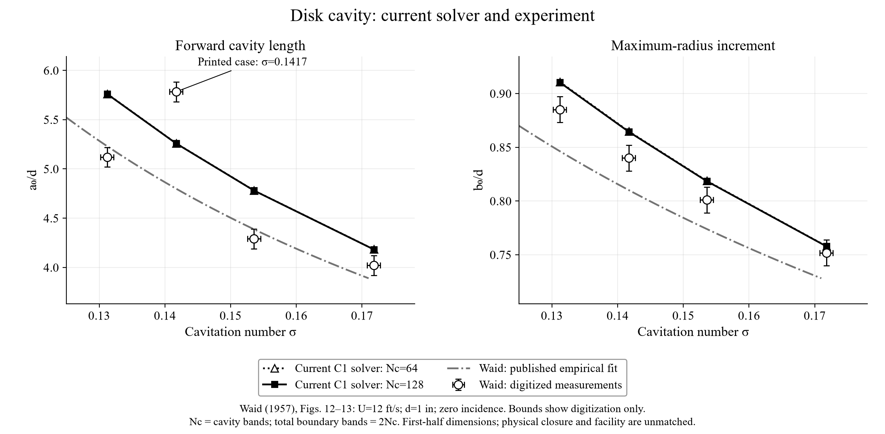
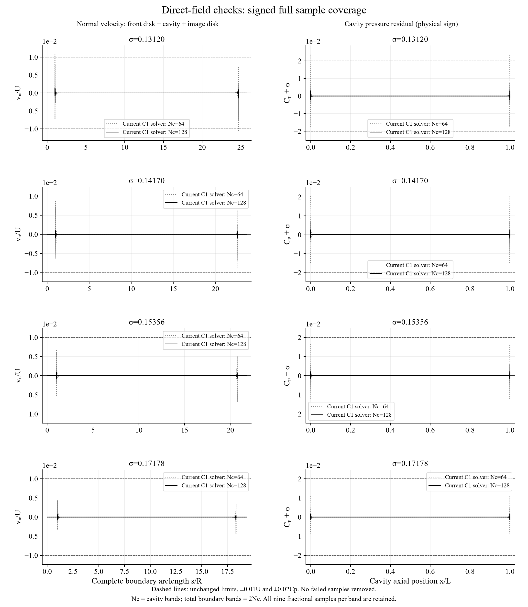

Limited experimental comparison; full-model experimental validation has not passed. Four measured forward-cavity dimension points are compared below. The current solver resolves its boundary conditions on the finer mesh, but does not reproduce the tunnel, sting, gravity or actual downstream closure. Numerical convergence and agreement with experiment are assessed separately.
The benchmark follows reference 300 and Figure 42 of Alavi & Roohi, Cavitation review, Part I (2026) back to Waid, Report E-73.4 (1957), Figures 12–13. The review identifies the evidence; the primary report supplies the measurements.
A 1-inch disk at zero incidence moves relative to water at 12 ft/s (3.6576 m/s). The experiment uses an air-sustained cavity in a 20 × 20-inch tunnel, a sting/strut and gravity; the source corrects the first-half radial shape for buoyant centreline rise. The model is unbounded, inviscid and image-symmetric. Only the measured cavitation number σ is matched by solving L/R; no measured dimension is fitted.
a₀ is disk-to-maximum-radius distance, not total closure length. b₀ is maximum radius minus disk radius; d = 2R. For the model, a₀/d = L/(4R) and b₀/d = (Rmax/R − 1)/2. The maximum is in the symmetry plane of its artificial image closure.

At Nc = 128, signed differences from the digitized dimensions are +12.52%, −9.06%, +11.41% and +4.03% for a₀/d, and +2.84%, +2.90%, +2.18% and +0.80% for b₀/d. The 64-to-128 changes are at most 0.032% and 0.049%, respectively. Small mesh changes therefore do not establish physical agreement. No pooled percentage or uncertainty bar combines model discrepancy with measurement reading uncertainty.
| Target σ | Nc / total bands | a₀/d | b₀/d | Signed difference length / radius increment | max |un|/U / |Cp+σ| | Direct field screen |
|---|---|---|---|---|---|---|
| 0.13120 | 64 / 128 | 5.76183 | 0.91074 | +12.55% / +2.89% | 0.01067 / 0.02347 | Fail, retained |
| 0.13120 | 128 / 256 | 5.76002 | 0.91030 | +12.52% / +2.84% | 0.001405 / 0.002999 | Pass |
| 0.14170 | 64 / 128 | 5.25966 | 0.86473 | -9.04% / +2.94% | 0.008863 / 0.0204 | Fail, retained |
| 0.14170 | 128 / 256 | 5.25830 | 0.86437 | -9.06% / +2.90% | 0.001011 / 0.002575 | Pass |
| 0.15356 | 64 / 128 | 4.78081 | 0.81872 | +11.44% / +2.21% | 0.006852 / 0.01656 | Pass |
| 0.15356 | 128 / 256 | 4.77986 | 0.81846 | +11.41% / +2.18% | 0.0008567 / 0.002138 | Pass |
| 0.17178 | 64 / 128 | 4.18334 | 0.75794 | +4.04% / +0.82% | 0.004403 / 0.01107 | Pass |
| 0.17178 | 128 / 256 | 4.18283 | 0.75779 | +4.03% / +0.80% | 0.0006177 / 0.001523 | Pass |
Nf = Nc/2 on each disk, so total meridian bands = 2Nc. All eight calculations use the unchanged reviewed C1 kernel, quadrature 24/12 and σ-matching tolerance 5×10⁻⁸. Every band retains the nine audit fractions 0.02, 0.05, 0.10, 0.25, 0.50, 0.75, 0.90, 0.95 and 0.98. The unchanged numerical limits are max |un|/U ≤ 0.01 and max |Cp+σ| ≤ 0.02. Both coarse-mesh failures remain in the table and raw records.

The finer solutions pass the tested direct-field numerical screens and supply an independent comparison with four experimental dimension points. The unresolved differences must still be assessed against closure and facility modelling. The data do not validate total cavity length, cavity pressure profiles, drag, smooth-body detachment, unsteady shedding or the separate two-dimensional hydrofoil solver. No absolute measured profile is reconstructed from residual graphs or global curve fits.
Method and limitations · Original point reads, calibration and source hashes · Comparison CSV · Summary and raw-run filenames · Evidence manifest.
Each raw JSON contains the nonlinear trace, state, full boundary samples and original case status. The source kernel SHA-256 is 9bfb67177b372128a26c0893f7df35fc3bfadae5ea6e30a2770d6b71905bfc7c. Run node match-waid-additional.cjs 1 3 4, node match-waid-1417.cjs 64, node match-waid-1417.cjs 128, then python compare-waid-current.py and python check-waid-comparison.py inside the linked evidence folder. No test threshold is changed for this comparison.